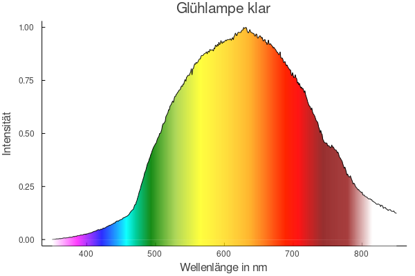
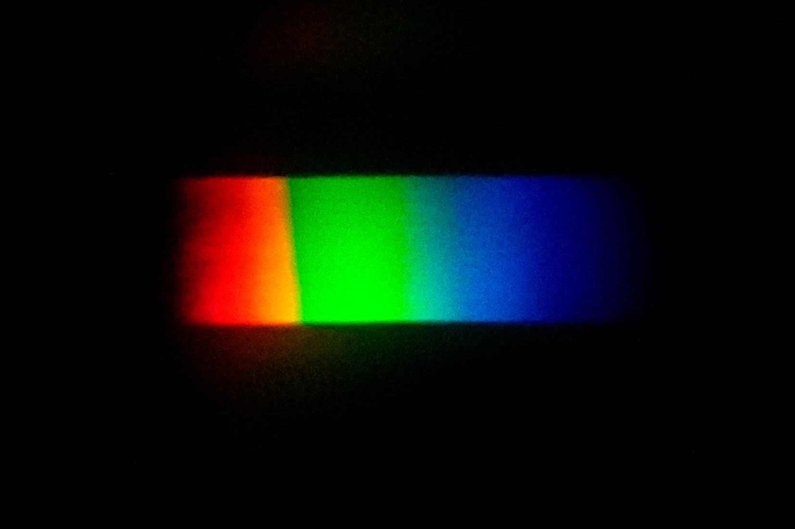

CCD-Spektrometer



In einer Glühlampe wird ein Glühfaden (der als elektrischer Widerstand wirkt) durch Strom aufgeheizt und so zum Leuchten gebracht. Die Art der Lichterzeugung wird als Glühemission bezeichnet. Der Glühfaden befindet sich in einer evakuierten Glashülle, um Oxidation und die Zerstörung des Drahts zu verhindern. Am häufigsten wird Wolfram für den Glühfaden genutzt.